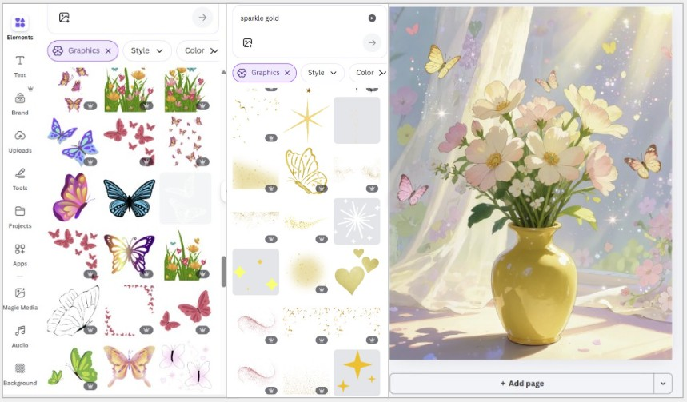

Spring is a time of soft light and gentle beauty. In this article I want to share how I created a series of floral compositions and which tools helped bring them to life.
You can see the full series on my Facebook page: View on Facebook.
Step 1: Generating the Base Image
Everything starts with the main composition. When writing a prompt I focus on soft natural light, cozy interior details like a window with curtains, delicate spring flowers such as tulips lavender and wildflowers, and an overall calm dreamy atmosphere.
The goal at this stage is a balanced image that already feels warm and inviting before any editing begins.
Step 2: Enhancing with Canva
This is where the real transformation happens. Canva is not just a design tool, it lets you add emotion and storytelling to an existing image through layered elements.

To access elements open the left sidebar and click Elements. The search bar at the top lets you find anything by keyword. Elements marked with a small crown icon are Pro (paid). Everything else is free. You can filter results by Graphics, Photos, Videos or Stickers using the tabs that appear after your search.
These are the elements I use most often for spring compositions:
Golden dust and sparkles. Search for "sparkle", "magic dust" or "glow". Once you place an element on the canvas, click it to open the toolbar, here you'll find the transparency slider (the checkerboard icon). I usually set sparkles to 20-40% transparency so they feel like light rather than decoration. For a natural effect place them where light would realistically fall.
Butterflies. Search "butterfly" and filter by Graphics for illustrated versions or Photos for realistic ones. Place them at different scales, larger in the foreground, smaller in the background, to create a sense of depth. To resize hold Shift while dragging a corner to keep proportions.
Light rays and glow. Search "sunlight", "light rays" or "lens flare". In the toolbar click Edit image then Effects to add additional glow or blur to the element itself. Keep all your light coming from one direction, mixing light sources makes the image feel inconsistent.
Soft overlays and bokeh. Search "bokeh" or "soft overlay". These work best at low transparency (15-30%) placed as the top layer. To adjust layer order right-click any element and choose Layer, Forward or Backward.
Step 3: Composition and Balance
The most important thing I learned: do not overload the image. Even beautiful elements become noise when there are too many of them.
I keep the main subject, the bouquet, in the center of attention and place effects around it rather than on top of it. If something feels distracting I either reduce its transparency or delete it entirely. Less is almost always more.
Step 4: Adding Text
For images I want to turn into digital cards I add a short phrase. In Canva click Text in the left sidebar and choose Add a heading for the main line or Add a subheading for a secondary line.
I prefer serif or script fonts for spring content, try Playfair Display, Cormorant Garamond or Great Vibes. Keep the font color in the same tonal range as the image, for warm beige compositions a soft gold (#C9A96E) or warm brown (#8B6340) works well.
Place text in the naturally empty areas of the image so it does not compete with the composition.
Simple phrases that work well: Good morning. Let today be soft and warm. A little magic for your day.
Why Canva Works So Well for This
The combination of a large free element library, simple layer management and quick export makes Canva a practical tool for turning generated images into finished content.
The learning curve is gentle and most of what you need, sparkles, overlays, fonts, light effects, is available without a paid plan. The Pro version adds more premium elements and the Background Remover tool, which becomes useful when you start working with cutout characters.
Final Thoughts
Creating these spring bouquet images was a calming and satisfying process. Sometimes stepping away from your main style and exploring something softer helps creativity grow.
Experimenting with mood and atmosphere in still compositions taught me a lot that I later applied to animated work.